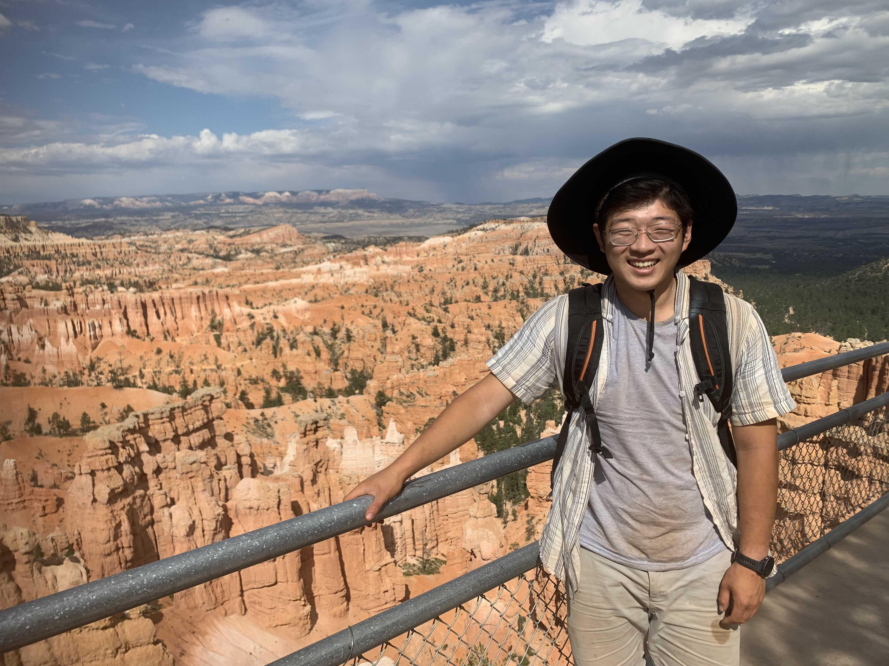
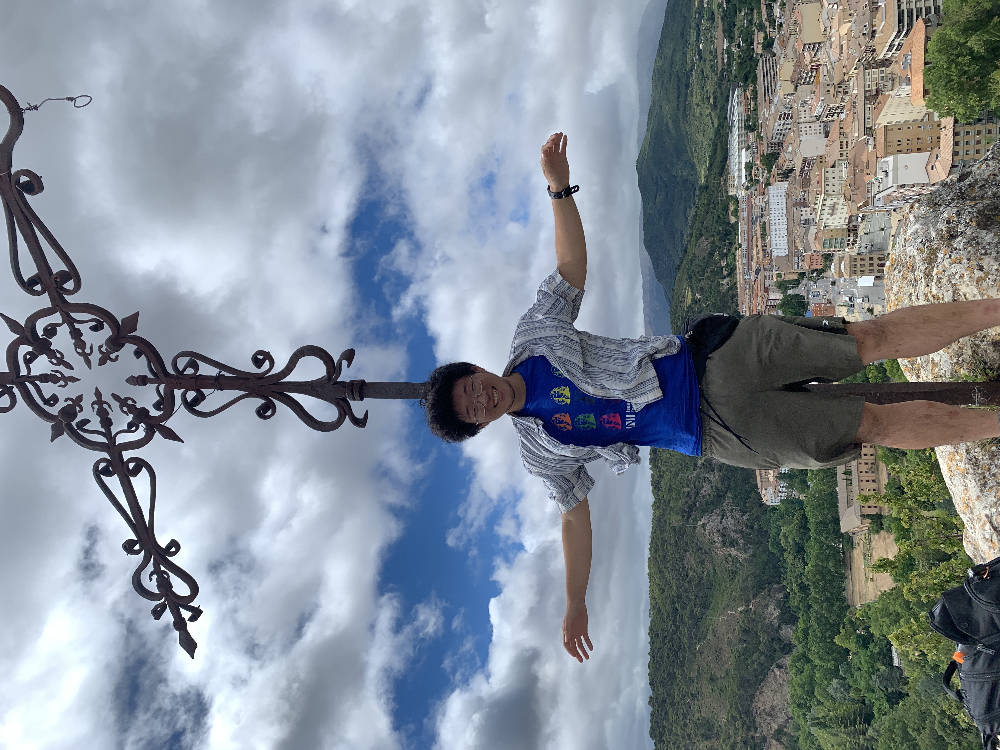
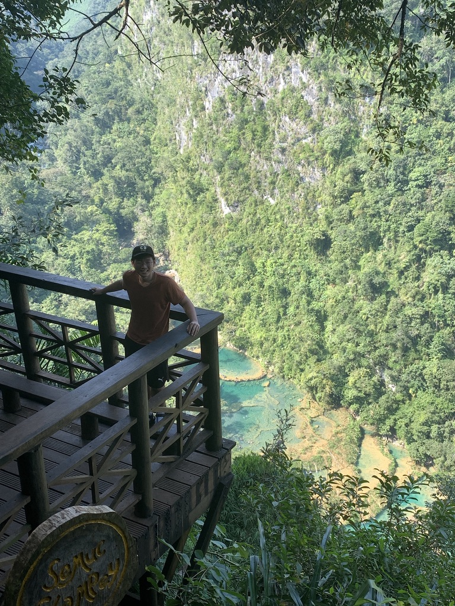

Spring 2025: Tour through Central Asia
Travel Locations
-
Istanbul, Turkey: A city that straddles Europe and Asia, known for its rich history and cultural landmarks like Hagia Sophia, a masterpiece blending Byzantine and Ottoman architecture; the Blue Mosque with its iconic minarets and blue tiles; Topkapi Palace, home to Ottoman sultans for centuries; the bustling Grand Bazaar, one of the world’s oldest markets; and the Bosphorus Cruise, offering scenic views of palaces, bridges, and waterfront mansions.
Read more -
Cappadocia, Turkey: Famous for its surreal landscapes filled with unique fairy chimneys, cave dwellings, and rock formations. It is a top destination for hot air balloon rides at sunrise, offering unforgettable panoramic views of valleys such as Göreme and Devrent. The region also boasts ancient underground cities like Derinkuyu and Kaymaklı, used as hiding places during Byzantine times.
Read more -
Pamukkale, Turkey: Known as the 'Cotton Castle' for its white travertine terraces formed by thermal waters cascading down the hills. Visitors can soak in the warm, mineral-rich pools with stunning views. The ancient city of Hierapolis, perched atop Pamukkale, features well-preserved Roman ruins, including a vast necropolis, a theater, and the famous Cleopatra’s Pool, said to have healing properties.
Read more -
Ephesus, Turkey: One of the best-preserved ancient cities in the Mediterranean, showcasing Roman and Greek architecture. Highlights include the Library of Celsus, a grand ancient library with intricate carvings; the massive Great Theater capable of seating 25,000 spectators; and the ruins of the Temple of Artemis, once one of the Seven Wonders of the Ancient World.
Read more -
Antalya, Turkey: A popular resort city on the Turkish Riviera, known for its stunning beaches like Konyaaltı and Lara, turquoise waters, and luxury resorts. The charming Old Town (Kaleiçi) features narrow cobblestone streets, Ottoman mansions, and historic landmarks. Nearby attractions include the Düden Waterfalls and ancient ruins like Perge and Aspendos with its impressive Roman theater.
Read more -
Bodrum, Turkey: A coastal town renowned for its beaches, nightlife, and historical significance. It is home to the Bodrum Castle, built by the Knights Hospitaller and now housing the Museum of Underwater Archaeology. The town also contains the remains of the Mausoleum at Halicarnassus, one of the Seven Wonders of the Ancient World. Sailing along the Aegean coast is a favorite activity here.
Read more -
Troy, Turkey: The legendary city of the Trojan War described in Homer’s Iliad. Archaeological excavations reveal layers of ancient cities built on top of one another, dating back to the Bronze Age. Visitors can see the symbolic replica of the Trojan Horse and ruins of city walls, temples, and houses, offering a glimpse into one of history’s most famous mythological battles.
Read more -
Mount Ararat, Turkey: The highest peak in Turkey at 5,137 meters, believed to be the resting place of Noah’s Ark according to biblical tradition. It is a prominent destination for mountaineering and trekking enthusiasts, offering challenging ascents and breathtaking views of the surrounding landscapes near the Turkish-Iranian border.
Read more -
Ankara, Turkey: The capital city of Turkey, blending modernity with history. Key attractions include Anıtkabir, the monumental mausoleum of Mustafa Kemal Atatürk, the founder of modern Turkey. The Museum of Anatolian Civilizations houses artifacts from ancient civilizations, while the old citadel and Roman ruins showcase the city's deep historical roots.
Read more -
Trabzon, Turkey: Located on the Black Sea coast, Trabzon is known for its lush green landscapes and cultural landmarks. The cliffside Sumela Monastery, built into the rocks of the Pontic Mountains, offers stunning views and historical significance. Trabzon is also famous for its tea plantations, local cuisine, and historic sites like the Hagia Sophia of Trabzon.
Read more -
Gallipoli Peninsula, Turkey: A site of immense historical importance, particularly for the Gallipoli Campaign of World War I. It is home to numerous memorials, cemeteries, and battlefields commemorating the soldiers who fought and perished during the campaign. Visitors can explore landmarks like Anzac Cove, Lone Pine Cemetery, and Chunuk Bair.
Read more -
Fethiye, Turkey: A stunning coastal town known for its turquoise waters, beautiful beaches, and vibrant harbor. It is home to the famous Ölüdeniz Blue Lagoon, perfect for swimming and paragliding, offering dramatic views of the coastline. Nearby attractions include the ghost town of Kayaköy, the Lycian Way hiking trail, and the ancient ruins of Telmessos.
Read more
Travel photos

Sunset Point
Bryce Canyon, USA
Summer 2024

Bryce Canyon, USA
Summer 2024
The Mirador
Estella, Spain
Summer 2024

Estella, Spain
Summer 2024
Semuc Champey
Guatemala
Winter 2023
Guatemala
Winter 2023
Countries in which I have spent nontrivial time